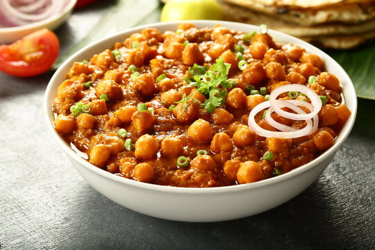

Chana Masala Recipe

Description
Chana Masala is a hearty North Indian chickpea curry packed with tangy, spicy, and aromatic flavors. It's a vegan-friendly dish that's both nutritious and deeply satisfying, often served with rice or flatbread like roti or puri.With its tomato-onion base and signature spice blend, chana masala is a weeknight-friendly meal that's easy to prepare yet full of traditional taste.
Ingredients
- 2 cups cooked chickpeas (or 1 can, drained and rinsed)
- 2 tablespoons oil
- 1 large onion, finely chopped
- 2 cloves garlic, minced
- 1 tablespoon grated ginger
- 2 tomatoes, finely chopped
- 1 green chili, chopped (optional)
- 1 teaspoon cumin seeds
- 1 teaspoon coriander powder
- 1 teaspoon garam masala
- 1/2 teaspoon turmeric
- 1/2 teaspoon chili powder
- Salt to taste
- 1/2 cup water (adjust as needed)
- Fresh cilantro for garnish
- Lemon wedges for serving
Steps
- Heat oil in a pan over medium heat. Add cumin seeds and let them splutter.
- Add chopped onions and sauté until golden brown.
- Stir in garlic, ginger, and green chili. Cook for 1-2 minutes.
- Add tomatoes, turmeric, coriander powder, chili powder, and salt. Cook until tomatoes break down and oil begins to separate.
- Add chickpeas and mix well. Pour in water and let the curry simmer for 10-15 minutes.
- Stir in garam masala and cook for 2 more minutes.
- Garnish with fresh cilantro and serve hot with lemon wedges and rice or roti.
Home